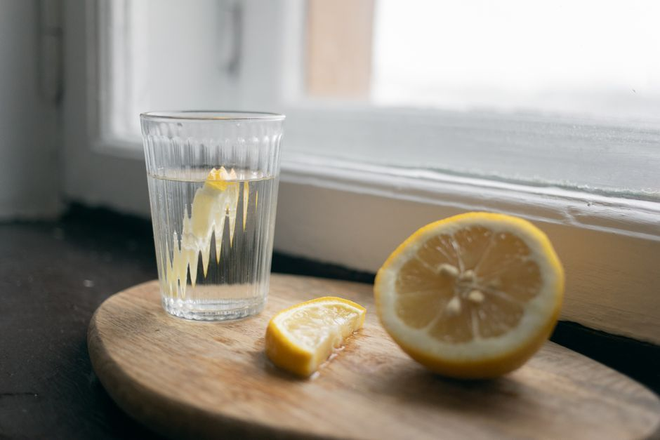

Liver Support
How Can You Support Your Liver Naturally?
You support your liver naturally by lightening what it has to process rather than forcing it to work harder. That means steady hydration, bitter and cruciferous foods, fewer chemicals coming in, real sleep, and an open path out through the gut and the lymph. Gentle and repeated beats harsh and short, every time.
What does your liver actually do?
Your liver is the body's great processor. Blood does not move through you without passing through it. It filters, it neutralises, it metabolises hormones, it handles medications and everyday chemical exposure, it makes bile so fats can be digested, and it steadies blood sugar between meals.
That is a wide job description, and it explains something people find confusing. When the liver is carrying more than it can comfortably move, the signs rarely look like liver signs. They look like tiredness that sleep does not fix, sluggish digestion, skin that flares, a harder time with hormonal shifts. The Cleveland Clinic's overview of the liver is a plain place to read the anatomy for yourself.
Your liver is not broken. It is busy.
Why does stress add to the liver's load?
Because the liver has to metabolise the chemistry that stress produces.
Chronic stress dysregulates the hormonal systems the liver is responsible for clearing. Elevated cortisol, thyroid function that has gone quiet, estrogen metabolism that has lost its rhythm: each of those lands on the same desk. A body that has been braced for a long season is not only tense in the shoulders. It is asking more of the processing organ, day after day, before any outside burden is added.
There is an older observation worth sitting with too. Many traditions associate the liver with anger and with grief that was never allowed out. I hold that loosely, as a lens rather than a law. But the pattern it points at is real enough: the emotions most commonly swallowed across a family line are the ones the body ends up carrying somewhere.
Is a liver cleanse or detox actually good for you?
Not the way it is usually sold. A harsh flush, a punishing juice-only week, a protocol built on urgency: all of it asks a tired system to sprint.

Here is the piece that gets skipped. Mobilising is not the same as eliminating. If the liver starts releasing faster than your bowels, kidneys, lymph and skin can carry things out, you do not feel lighter. You feel worse, and people usually blame themselves for it. That is not a character failure. That is traffic. Open the drainage pathways first, keep the lymphatic system moving, and the liver's work has somewhere to go.
The body heals under safety, not pressure. A cleanse that frightens your system is not detox. It is one more demand.
How can I support my liver naturally, day to day?
Simple, repeatable, unglamorous. That is the whole method.
Water, consistently. Every pathway out of the body is wet. Sip through the day rather than gulping at night.
Bitter and cruciferous foods. Rocket, dandelion greens, endive, radicchio, broccoli, cabbage, Brussels sprouts. Bitter flavour prompts bile flow, and bile is how the liver actually escorts things out.
Fibre, because bile needs a ride. What bile carries out has to bind to something in the gut or it can be reabsorbed. Vegetables, legumes, ground flax, oats.
Lighten the incoming chemical load. Cleaning products, fragrance, plastics warmed in the microwave, alcohol. You do not need a perfect house. You need a smaller pile.
Sleep, and a slower evening. Overnight is when a great deal of processing happens. A late scroll in bright light is a small tax you pay the next day.
Move, and sweat sometimes. Movement pushes lymph, and lymph is the liver's delivery lane.
Herbs like milk thistle and dandelion root belong in this conversation, and they belong with a practitioner who knows your medications and your full picture, not with an internet protocol. The National Institute of Diabetes and Digestive and Kidney Diseases is the right place to start if you have a diagnosed liver condition.
When should you talk to a doctor about your liver?
Please involve your physician if you have jaundice, persistent pain under the right ribs, dark urine with pale stools, swelling in the abdomen or legs, unexplained weight loss, or a known hepatitis or fatty liver diagnosis. Liver enzymes are a simple blood test, and knowing your numbers is not fear, it is information. Ask what your enzymes are doing and whether any of your current medications ask more of the liver.
Work like mine sits alongside that care. Never in place of it. What I offer is gentle detox support shaped around your constitution and your real life, and the same pattern of processing and release is what I trace through the whole body in Nothing Missing, Nothing Broken.
Pause for reflection
Place a hand just under your right ribs, where the liver sits, and let one slow exhale go all the way out.
Ask gently: what am I asking my body to process right now that it did not choose? And what is one thing I could stop adding this week, rather than one more thing I could start?
You are not behind. Your body has been working the whole time.
FAQ
How long does it take to support the liver naturally?
There is no fixed timeline, and anyone who promises one is guessing. Hydration and bile-friendly meals show up within weeks in digestion and energy. Deeper patterns move on the body's schedule, not a calendar's.
Does coffee help or hurt the liver?
The research on coffee and the liver is more favourable than most people expect, though it depends on your own picture and your sleep. If coffee is propping up an exhausted system, the coffee is not the real question.
Do I need a supplement to support my liver?
Food, water, fibre, sleep and a lighter chemical load do most of the work. Herbs and supplements are best chosen for your specific situation and checked against your medications, which is a conversation, not a shopping list.
Where should I start?
Start with water and one bitter green this week. If you would like support built around your own history and constitution, you can start a conversation through the contact page.
This article is for educational purposes and is not medical advice. It is not intended to diagnose, treat, cure, or prevent any disease. Please work with a qualified practitioner, and consult your physician before making changes to your health routine.
In Renewal,
Lynette Wing
Founder of Renewal Health
Clinical Homeopath, Naturopath, Mind-Body Practitioner
Dedicated to root-cause healing and whole-person alignment. Guiding clients to emerge, align, and live fully, restoring vitality, clarity, and sustainable wellness. About Lynette